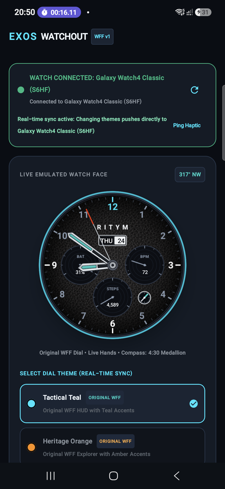
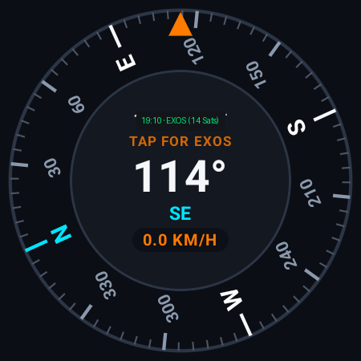

EXOS develops dedicated software applications and hardware bridge solutions for outdoor expedition teams, emergency responders, and field engineers who operate in remote areas where cellular and internet coverage does not exist.

Each application is purpose-built to solve a distinct operational challenge: wrist-worn navigation, external satellite positioning bridging, and off-grid voice communication.
A standalone Wear OS smartwatch watch face and companion mobile application offering real-time orientation, heading tracking, and emergency backtracking for wilderness navigation.
A high-precision satellite telemetry bridge that connects external GNSS receivers to Android's mock location provider and Windows virtual COM ports.
An off-grid digital walkie-talkie connecting teams over Wi-Fi Direct and Bluetooth Low Energy with low-latency push-to-talk voice, 10 isolated channels, and emergency distress beaconing.
EXOS Wayfinder provides glanceable, wrist-accessible navigation for Wear OS smartwatches (including Samsung Galaxy Watch series and Google Pixel Watch) and paired Android handsets. Built natively using Google's Watch Face Format (WFF v1), it operates completely offline without cellular reception.
Key Technical Specifications: Two original WFF design themes (Tactical Teal & Heritage Orange), 50Hz dynamic heading sensor fusion, real-time Day/Date calendar window, live battery %, heart rate BPM, step count subdials, and rotating 4:30 compass medallion.


EXOS GPS Transceiver serves as a dedicated communications bridge between external GNSS hardware receivers (such as the EXOS-GPS Puck or high-gain marine GPS units) and host computers. It feeds high-precision satellite telemetry into standard applications like Google Maps, ATAK-CIV, and QGIS.
Key Technical Specifications: Ingestion of GPS, GLONASS, Galileo, BeiDou, and QZSS constellations; sub-meter positioning accuracy; dual Transmitter and Receiver operating modes; virtual COM port multiplexer for Windows desktop integration.



EXOS ECHO turns any standard Android smartphone into a standalone, off-grid digital walkie-talkie and wilderness mesh transceiver. Connecting devices peer-to-peer via Wi-Fi Direct and Bluetooth Low Energy, it delivers reliable voice communication where telecom towers do not reach.
Key Technical Specifications: Sub-100ms Push-to-Talk latency, 16 kHz HD IMA-ADPCM digital audio compression, 10 cryptographically isolated channels with Dual-Watch standby monitoring, background call ringing with screen locked, and 100% free emergency SOS distress beacon.


From alpine trails to open water, discover how our integrated software and hardware platforms maintain mission continuity.
Equip ground search personnel with EXOS ECHO for low-latency peer-to-peer voice and EXOS Transceiver for sub-meter mapping precision in heavily forested terrain.
Hands-free wrist orientation with EXOS Wayfinder on Wear OS smartwatches, tracking bearings and barometric altitude shifts during extreme weather ascents.
Stream NMEA-0183 position sentences over Bluetooth to navigation laptops running OpenCPN or marine chart plotters without requiring satellite subscriptions.
Autonomous peer-to-peer radio mesh networks that deploy instantly when storms, floods, or infrastructure failures disable commercial cellular networks.
Detailed technical comparison across target platforms, communication protocols, latency, and positioning accuracy.
| Specification Parameter | EXOS Wayfinder | EXOS Transceiver | EXOS ECHO | EXOS-GPS Puck (Hardware) |
|---|---|---|---|---|
| Primary Function | Smartwatch & Mobile HUD Navigation | GNSS Telemetry & Mock Location Bridge | Off-Grid PTT Voice & Mesh Radio | High-Precision GNSS Receiver |
| Supported Platforms | Wear OS 4/5 & Android 10+ | Android 8.0+ & Windows 10/11 | Android 9.0+ Handheld & Tablet | Autonomous Embedded Firmware |
| Communications Link | Wearable DataLayer & Bluetooth 5.2 | Bluetooth SPP & USB-C Serial | Wi-Fi Direct (P2P) + BLE 5.0+ | Bluetooth 5.2 Long Range & USB Serial |
| Voice & Audio Latency | Haptic Alerts & Audio Beacons | N/A (Telemetry Stream Only) | < 100 ms (16 kHz HD IMA-ADPCM) | N/A |
| Satellite Constellations | Internal Sensor Fusion / External GNSS | GPS, GLONASS, Galileo, BeiDou, QZSS | Offline Map & GPS Coordinate Share | Multi-Band L1/L5 GNSS Receiver |
| System Mock Location | Target Coordinate Ingestion | Smart Guided Mock Provider | Background Tactical Waypoint Plotting | Raw NMEA-0183 Stream Output |
| Emergency SOS Distress | Foreground Emergency Flash Beacon | Emergency Distress Telemetry Packet | 100% Free Acoustic Alarm & Coordinates | Autonomous Panic Beacon Switch |
| Cellular / Cloud Requirement | 100% Offline (No Data Needed) | 100% Offline (No Data Needed) | 100% Offline (No Data Needed) | 100% Offline (Autonomous) |
Follow these simple steps to join our closed testing fleet on Google Play and begin field trials.
Access credentials for our Google Play closed testing track are managed through our official Google Group. Join the group with your Google Play email address.
Join Testers GroupOpen the Google Play opt-in invitation links for Wayfinder, Transceiver, or ECHO to authorize your account for immediate beta app downloads.
Accept Web Opt-InInstall the applications onto your physical Samsung Galaxy Watch or Android mobile device. Verify offline orientation and direct mesh communications in your local area.
Download Applications